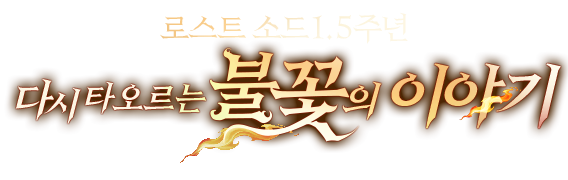
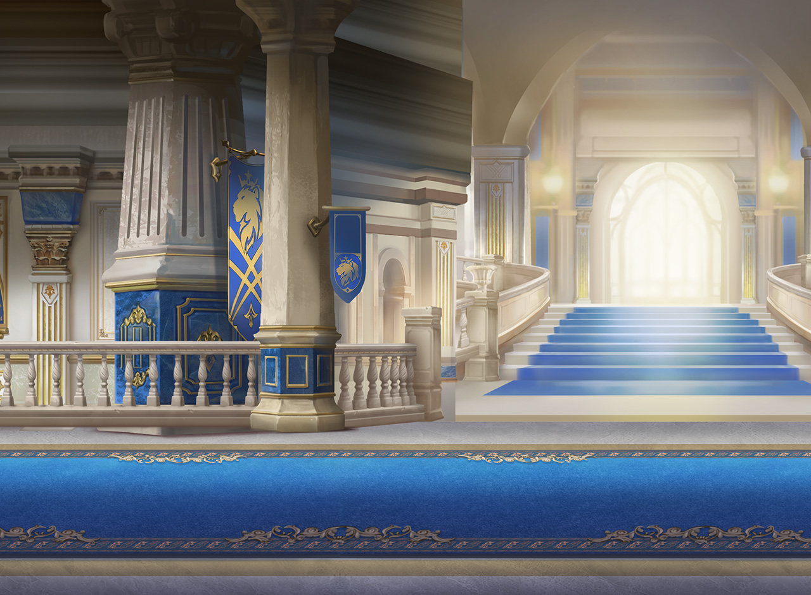
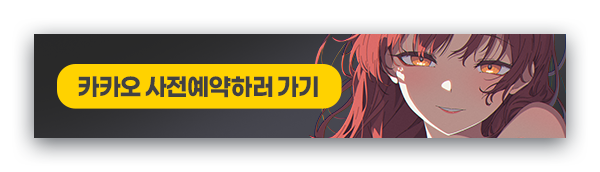
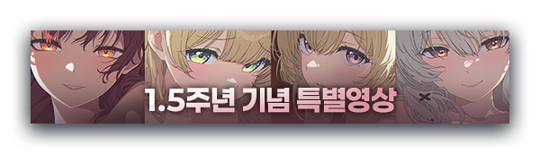
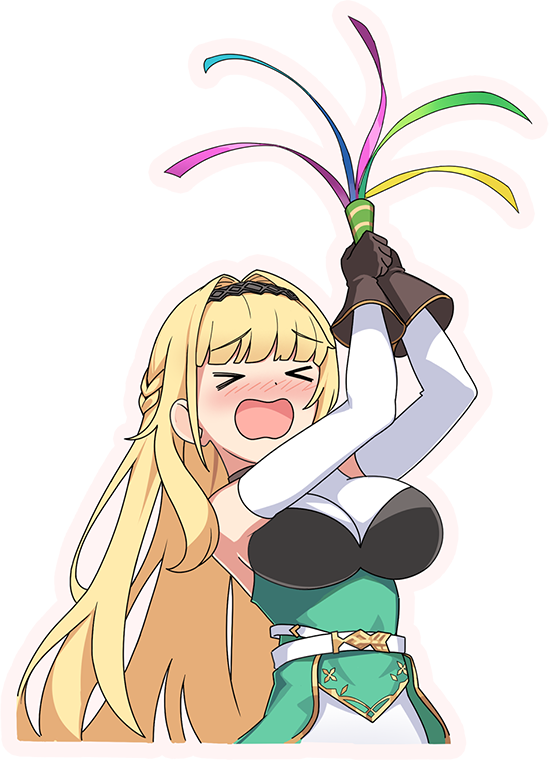
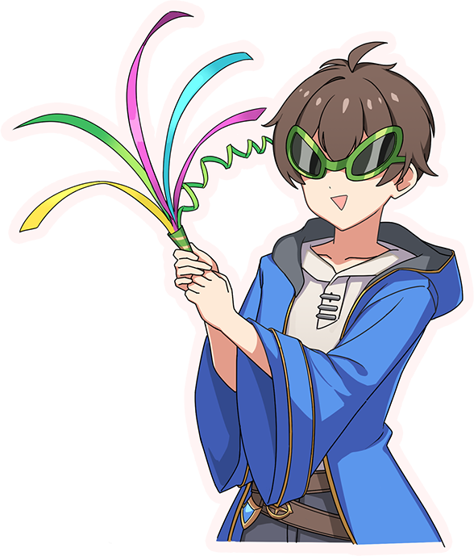

로스트소드 1.5주년 사전예약, 신규 캐릭터 염제 케이 클래스 미리보기 (모바일 서브컬처 RPG 추천)
안녕하세요, 영원한도시입니다. 로스트소드가 글로벌 1.5주년을 맞아 사전예약 이벤트를 돌리고 있길래, 처음 보시는 분들도 이번 기회에 발 담그기 좋게 클래스랑 신규 캐릭터부터 쭉 정리해 봤는데요. 참고로 로스트소드 글로벌 서비스 자체는 작년(2025년) 7월 10일에 이미 시작했고, 지금 도는 건 신규 출시가 아니라 '1.5주년 업데이트 사전예약'이라는 점 먼저 짚고 갈게요(옛날 출시 정보랑 헷갈리기 딱 좋더라고요).
정리하면 이렇습니다. 로스트소드는 코드캣이 만들고 위메이드맥스 자회사 위메이드커넥트가 서비스하는 아서왕 전설 모티브 서브컬처 방치형 RPG인데요, 한국은 2025년 1월 16일에 먼저 나왔고 글로벌(북미·유럽 포함)은 2025년 7월 10일에 열렸습니다. 그리고 딱 지금, 글로벌 기준 1.5주년을 맞아 신규 캐릭터랑 사전예약 이벤트를 새로 돌리고 있더라고요. 로스트소드를 처음 보는 분들도 이번 기회에 클래스랑 캐릭터 구조부터 훑어보면 진입하기 편할 것 같아서 준비해 봤습니다.

공식 사이트에 걸려 있는 1.5주년 타이틀 문구입니다. "다시 타오르는 불꽃의 이야기" — 이번 업데이트 테마가 뭔지 딱 감이 오죠?
이미지: 로스트소드 공식 사이트
1. 로스트소드가 어떤 게임이냐 - 처음 보시는 분들을 위해
제목만 보면 무슨 게임인지 감이 안 잡히실 수도 있는데요, 배경이 아서왕 전설입니다. 원탁의 기사, 엑스칼리버, 아발론 같은 소재를 서브컬처 일러스트로 풀어낸 수집형 RPG예요. 대륙이 9개 국가로 나뉘어 있고 그 모티브가 로만 브리튼, 그러니까 지금의 영국 쪽이라고 하네요. '멀린' '모르가나' '퍼시벌' '베디비어'처럼 아서왕 전설에 나오는 이름들을 캐릭터로 다시 만든 셈이죠.
전투는 방치형 기반이지만 8등신 캐릭터가 화려하게 움직이는 액션 연출이 강점으로 꼽히더라고요. 한국은 작년 1월 16일 출시 후 50일 만에 모바일 서브컬처 RPG 장르 다운로드·매출 1위를 찍었다고 하고요. 그 힘으로 같은 해 7월 10일 북미·유럽까지 글로벌 서비스를 확장했습니다.

공식 사이트 세계관 소개란에 쓰인 배경 아트인데, 이런 성(城) 분위기 배경이 로스트소드 인게임 로비·스토리 컷에도 그대로 이어집니다.
이미지: 로스트소드 공식 사이트 세계관 소개
2. 지금 사전예약 - 1.5주년 업데이트는 왜 하는 거냐
제가 카카오게임즈 사전예약 페이지를 직접 들어가 보니, 지금 돌고 있는 사전예약은 신규 출시가 아니라 1.5주년 업데이트 기념 사전등록이었습니다. 서비스 중인 게임이 큰 업데이트 앞두고 신규·복귀 유저를 모으는 이벤트인 거죠.

공식 사이트 메인에 걸려 있는 사전예약 배너입니다. "카카오 사전예약하러 가기"라고 크게 써 있으니 헷갈릴 일은 없어요.
이미지: 로스트소드 공식 사이트
보상은 🔍 공식 사전예약 페이지 세부 항목 확인 기준으로 다이아·소환권 계열이 나오는데요, 관련 기사에서는 사전등록 참여 시 다이아 2,000개 + 고급 캐릭터 소환권 + 고급 펫 소환권 등을 지급한다고 안내하고 있습니다. 정확한 수량이나 등급은 이벤트 진행 중 조정될 수 있으니, 실제로 참여하실 때는 공식 페이지에서 최종 확정된 보상표를 한 번 더 확인하시는 게 좋을 것 같아요.
출석 이벤트를 통해 최대 300회 무료 소환 기회도 준다고 하니, 신규로 들어가는 분들은 이번 타이밍이 꽤 혜자스러운 편입니다.
3. 신규 캐릭터 - 염제 케이가 뭐길래
이번 1.5주년의 메인은 신규 캐릭터 '염제 케이(炎帝 케이)'더라고요. 기존에 있던 탱커 캐릭터 '케이'의 각성 버전인데, 설정이 은근히 무거웠습니다. "더 강한 힘을 갈망하다가 화염의 군주 염제를 깨우게 됐고, 염제를 세상 밖으로 못 나가게 하려고 자기 몸에 가두면서 시한부 인생을 살게 됐다"는 서사인데요, 원래 케이가 화염 속성 탱커로 유명했던 걸 생각하면 나름 스토리가 이어지는 셈이죠.
전투 스타일은 이렇습니다
능력치 쪽으로는 적에게 화상과 영구적인 치명타 저항 감소를 부여하고, "업화의 화염으로 자신을 막아서는 모든 적을 불태우는" 신성 속성 전열 기사로 소개되고 있습니다. 화염 속성 탱커였던 원판과 달리 신성 속성으로 바뀐 점이 눈에 띄는데요, 정확한 스킬 수치나 계수는 🔍 인게임 캐릭터 정보창 확인 필요합니다.

공식 사이트 배너로 걸린 1.5주년 기념 특별영상 캐릭터 라인업이에요. 왼쪽부터 붉은 눈매가 이번에 화제인 캐릭터들 실루엣인데, 염제 케이 관련 비주얼도 이 라인업 쪽에서 순차 공개되고 있습니다.
이미지: 로스트소드 공식 사이트
4. 클래스(역할군) 구조 - 신규 유저가 꼭 알아야 할 것
처음 들어가시는 분들이 제일 헷갈리는 게 클래스 구조인데요, 로스트소드는 크게 딜러 · 힐러 · 탱커 · 서포터 네 역할군으로 나뉘고, 여기에 화염 · 자연 · 광휘 · 혼돈 · 전격 · 빙결 · 신성 7가지 속성이 겹칩니다. 속성별로 입장 가능한 던전이 요일마다 로테이션되는 구조라, 파티를 짤 때 역할군만 보지 말고 속성도 같이 봐야 하더라고요.
대표 캐릭터 몇 명을 표로 정리해 봤습니다.
| 캐릭터 | 역할군 | 속성 | 특징 |
|---|---|---|---|
| 케이 (염제 케이) | 탱커→전열 기사 | 화염→신성 | 화상·치명타 저항 감소 부여 |
| 멀린 | 딜러(마법사) | 신성 | 속성 상성 무관 범위 공격+빙결 |
| 란 | 딜러(근접) | 신성 | 방어력 감소+감전 피해 누적 |
| 트리스탄 | 딜러(전열) | 🔍 공식 확인 | 액티브 3개 전부 속박 내장 |
| 에스메랄다 | 메인 힐러 | 🔍 공식 확인 | 아군 생존력 극대화 회복 |
| 베디비어 | 서브 힐러 | 🔍 공식 확인 | 속박형 군중 제어 겸용 |
| 리아 | 서포터 | 🔍 공식 확인 | 공격력·치명타 피해 버프 |
여기서 함정 하나 짚고 갈게요. 케이처럼 같은 이름 캐릭터가 각성 버전으로 다시 나오면서 속성·역할군이 바뀌는 경우가 있습니다(화염 탱커 → 신성 전열 기사). 옛날 티어표나 공략 글만 보고 "케이=화염 탱커"라고 외우면 이번 염제 케이랑 헷갈릴 수 있으니, 지금 신규로 시작하시는 분들은 캐릭터 정보창에서 버전 표기까지 확인하시는 걸 추천드려요.
5. 공식 굿즈로 보는 캐릭터 - 엘리자베스와 이든
사전예약 신규 캐릭터 말고, 원래 있던 인기 캐릭터들 비주얼도 같이 보고 가면 좋을 것 같아서 공식 디지털 굿즈 이미지도 챙겨봤습니다.

밝은 색감의 이 캐릭터가 공식 4컷 만화에도 등장하는 '엘리자베스 공주'입니다. 좌충우돌 모험기가 컨셉이라던데, 표정만 봐도 텐션이 느껴지죠.
이미지: 로스트소드 공식 사이트 디지털 굿즈

같은 굿즈 라인에 있는 남성 캐릭터입니다. 고글 쓴 모습이 개성 있는데, 정확한 캐릭터명은 🔍 공식 캐릭터 도감 확인이 필요해서 비워둘게요.
이미지: 로스트소드 공식 사이트 디지털 굿즈
6. 사전예약 참여 방법 - 이렇게 하면 됩니다
참여 방법은 어렵지 않습니다.
- 1) 로스트소드 공식 사이트 또는 카카오게임즈 사전예약 페이지 접속
- 2) 플레이할 플랫폼(구글플레이 / 앱스토어 / 원스토어) 선택
- 3) 카카오 계정 연동 또는 안내에 따라 등록
- 4) 업데이트 적용 후 게임 접속 시 보상 일괄 수령
사전예약 보상은 런칭(업데이트 적용) 이후 일괄 지급 예정이라고 공식 사이트에 안내돼 있으니, 등록해 두고 업데이트 날짜에 접속하시면 됩니다. 정확한 업데이트 적용일은 🔍 공식 채널 공지 확인 — 이 글 쓰는 시점 기준으로는 별도 공지를 통해 순차 공개한다고만 돼 있더라고요.
7. 신규·복귀 유저가 알아두면 좋은 것
1.5주년 맞춰서 신규·복귀 이용자 대상 성장 부스트 프로그램도 같이 돈다고 합니다. 게다가 보스 레이드가 시즌3로 개편되면서 새로운 보스들도 추가된다고 하니, 예전에 하다 접었던 분들도 이번 타이밍에 들어오면 콘텐츠 공백 없이 따라잡기 좋을 것 같아요.
4성 캐릭터도 초·중반 구간에서는 충분히 버틸 만하다는 평이 많아서, 처음부터 5성만 노리고 기다릴 필요는 없어 보입니다. 다만 4성과 5성 사이 체급 차이가 있다는 얘기도 있으니, 장기적으로는 5성 위주로 덱을 짜는 걸 목표로 잡으시면 될 것 같습니다.
로스트소드는 이미 작년에 글로벌 출시가 끝난 서브컬처 RPG고, 지금(7월)은 글로벌 1.5주년 업데이트 사전예약 시점이라는 것, 신규 캐릭터 '염제 케이' 공개와 보스 레이드 시즌3 개편이 핵심이라는 것만 기억해 두시면 됩니다. 클래스는 딜러·힐러·탱커·서포터 4역할군에 7속성이 겹치는 구조고, 처음 들어가시는 분들은 캐릭터 버전 표기(같은 이름이라도 각성판은 속성이 바뀔 수 있음)만 주의하시면 될 것 같아요.
정확한 업데이트 적용일이나 사전예약 보상 최종 수량은 공식 채널에서 순차 공개된다고 하니, 참여하실 분들은 등록 전에 공식 사이트나 카카오게임즈 페이지에서 한 번 더 확인해 보시는 걸 추천드려요. 저도 이번 염제 케이 스토리 공개되면 한 번 더 정리해서 들고 오겠습니다 :)
▶ 같이 보면 좋은 글
· 로스트소드 관련 기존 글 — (네이버에서 해당 글 링크를 직접 넣어 주세요, 발주에 기존 글 정보가 없어 생략)